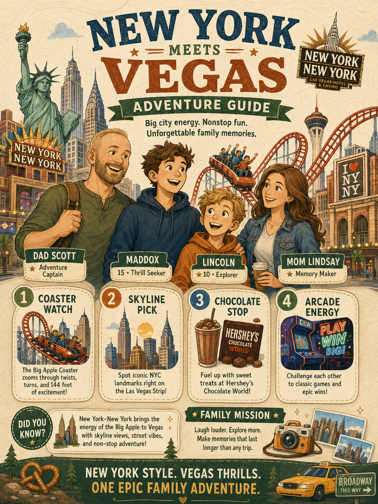

1. Coaster Watch
Catch the coaster racing around the hotel and rank the best pass-by.

Return Vegas Stay
This chapter is the final Vegas burst: coaster energy, skyline photos, arcade noise, chocolate nearby, and city-style missions.
The coaster reaches speeds over 67 mph, so even watching it from below feels big.
The coaster includes a huge drop, making the hotel feel like part attraction, part city set.
HERSHEY’S Chocolate World is a strong nearby treat stop if everyone wants something easy.
A quick final-Vegas route that does not require overplanning.
Catch the coaster racing around the hotel and rank the best pass-by.
Pick the coolest building shape on the hotel skyline.
Find HERSHEY’S Chocolate World and pick the best candy display.
Look for the loudest, most Vegas arcade moment.
Coaster, chocolate, arcade, pool, food, or skyline photo. That becomes your final Vegas memory before airport mode.